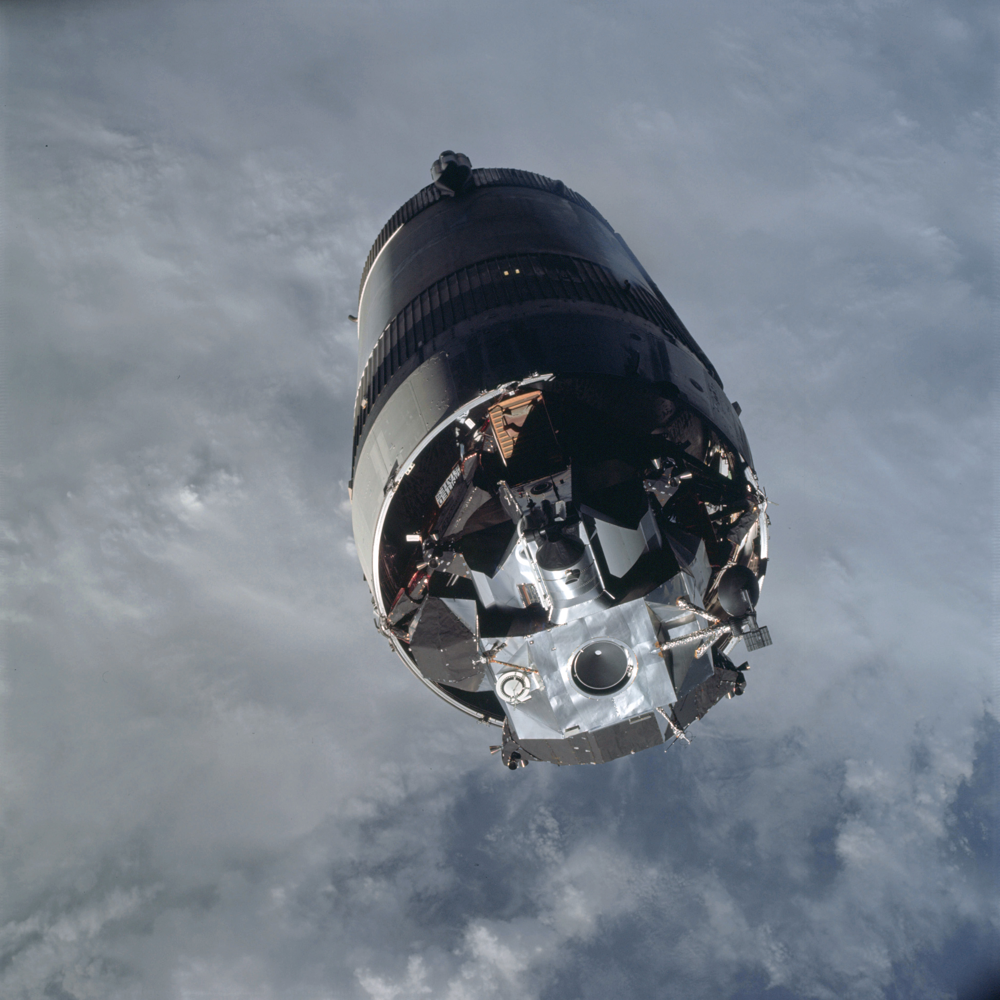
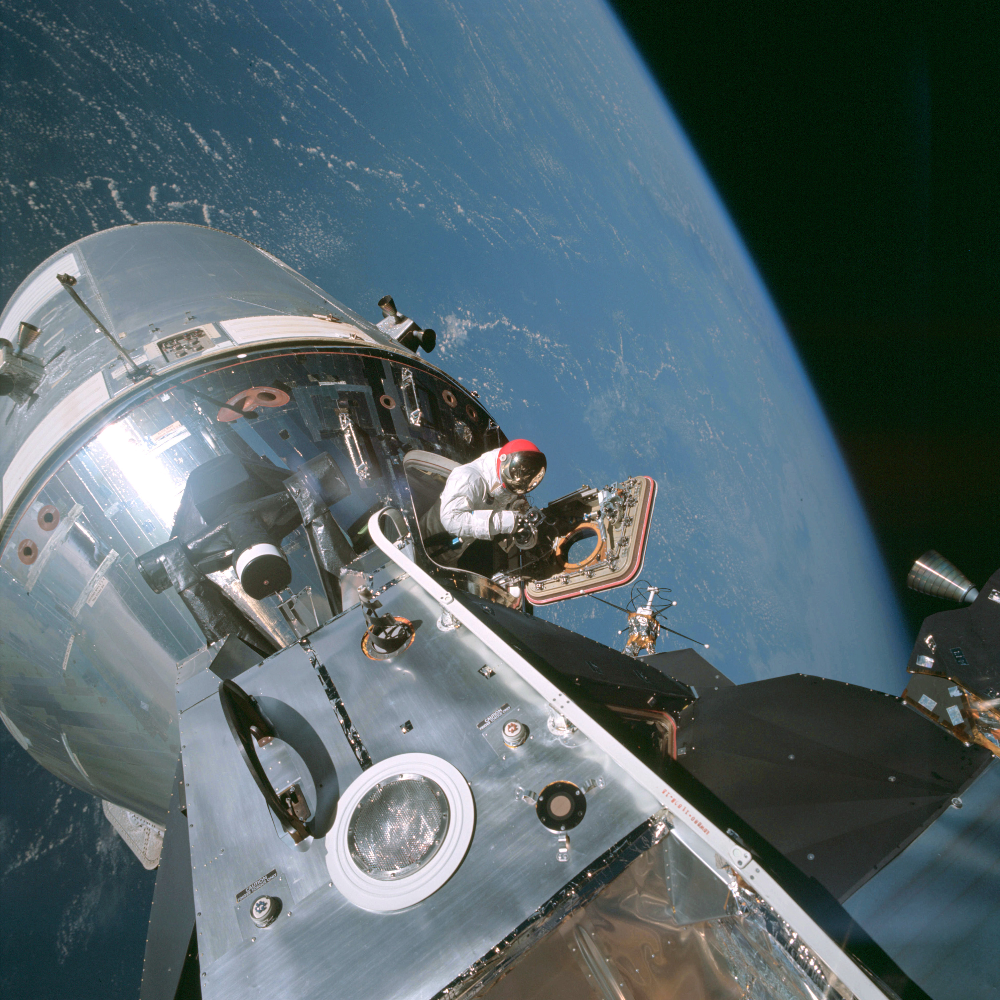

Apollo 9: Earth Orbital trials
NASA officials Wernher van Brawn (center) and George Mueller (with
headphones) wait with Vice President Spiro Agnew in the launch control
room at Kennedy Space Center for the Apollo 9 mission to lift
off.
For the 19th flight of American astronauts into space, Vice President
Spiro T. Agnew, representing the new administration of Richard Nixon,
sat in the firing control room viewing area on 3 March 1969. He and
other guests listened to the countdown of the tall Saturn-Apollo
structure several kilometers away at the edge of the Florida beach.
Fully recovered from their stuffy heads and runny noses, McDivitt,
Scott, and Schweickart lay in the mixed-atmosphere cabin of CSM-104.
Breathing pure oxygen through the suit system, they tried to adjust an
inlet valve that seemed to have two temperature ranges - too hot and too
cold. That was their only problem. Less than one second after its
scheduled 11:00 a.m. EST liftoff time, Apollo 9 rumbled
upward.19
In Houston, where more than 200 newsmen had registered to cover the
mission, Flight Director Eugene F. Kranz and Mission Director George H.
Hage* watched the displays on their
consoles while McDivitt and CapCom Stuart Roosa called off the events of
the launch sequence. There were the usual vibrations but, on the whole,
the Saturn V's S-IC stage gave the crew what McDivitt called "an
old lady's ride" - very smooth. The big surprise came when its five
engines stopped thrusting. Feeling as if they were being shoved back to
the earth, the astronauts lurched forward, almost into the instrument
panel. The S-II second stage engines then cut in and pressed them back
into the couches. Everything went well until the seven-minute mark, when
the old pogo problem popped up again. Although the oscillations were
greater than those of Borman's flight, McDivitt's crew lodged no
complaints. At 11 minutes 13 seconds from launch, the S-IVB third stage
kicked itself and the two spacecraft into orbit 190 kilometers above the
earth.20

After reaching earth orbit, the crew separated from the Saturn V's
S-IVB stage and turned the command module around to face the lunar
module, still attached to the stage. Command module pilot Scott
maneuvered the CM probe into the dish-shaped drogue on the LM and pulled
out the lunar craft.
Upon reaching the orbital station, the trio remembered Borman's warning
against jumping out of the couches too quickly and flitting about in the
weightless cabin. The men avoided sudden head turns, made slow
deliberate movements, took medication - and still felt dizzy. But they
were able to go about their duties, checking instruments and extending
the docking probe. After more than a circuit, 2 hours 43 minutes into
the mission, Scott lit the pyrotechnics that separated the command and
service modules from the S-IVB stage and began one of the critical steps
in the lunar-orbit concept. He fired the thrusters and pulled the
command ship away, turned the ship around, fired again, and drew near
what he called the "big fellow." Then he noticed that the
command module's nose was out of line with the lander's nose. Scott
tried to use a service module thruster to turn left, but that jet was
not operating. The crew then flipped some switches, which started the
thruster working, and at 3 hours 2 minutes the command module probe
nestled into the lunar module drogue, where it was captured and held by
the latches.21
After docking, McDivitt and Schweickart began preparing for their
eventual entry into the lunar module. First, they opened a valve to
pressurize the tunnel between the two spacecraft. With Scott reading the
checklist aloud, McDivitt and Schweickart removed the command module
hatch and checked the 12 latches on the docking ring to verify the seal.
Next they connected the electrical umbilical lines that would provide
command module power to the lander while the vehicles were docked.
McDivitt checked the drogue carefully and found no large scars.
Meanwhile, Schweickart glanced out the spacecraft window and failed to
see the lunar module in the darkness, which scared him. "Oh, my
God!" he exclaimed, "I just looked out the window and the LM
wasn't there." Scott laughed and said it would be "pretty hard
[not to] have a LM out there . . . with Jim in the tunnel."
McDivitt put the hatch back in place until time to transfer into the
lander. About an hour later, an ejection mechanism kicked the docked
spacecraft away from the S-IVB. Apollo 9 backed away, and
the Saturn third stage, after firing twice, headed for solar orbit.22
McDivitt's crew then turned to another trailblazing task - firing the
service module propulsion system. Astronauts had in the past used one
vehicle to push another into higher orbit,** but never a craft as big as the lander.
Some six hours into the mission, they made the first test burn, which
lasted five seconds. Flight controllers in Houston considered this the
most critical of the docked service module engine firings. Scott must
have agreed with them, because he exclaimed, "The LM is still
there, by God!" The engine had come on abruptly, McDivitt later
said; with the tremendous mass, however, acceleration was very slow - it
took the whole 5 seconds to add 11 meters per second to the speed.
Sixteen hours after this short burst, a second propulsion system
ignition, lasting 110 seconds, included gimbaling (or swiveling) the
engine to find out whether the guidance and navigation system's
autopilot could steady the spacecraft. The autopilot stilled the motions
within 5 seconds.23
The crewmen grew more and more confident that they could handle their
machines. And that was a good thing, since they next had to make a
280-second burn, to produce an added velocity of 783 meters per second.
This lightened the service module's fuel load by 8,462 kilograms and
made it easier to turn the vehicles with the reaction control jets. The
firing also altered the flight path and raised the apogee of the orbit
from 357 to 509 kilometers, to provide better ground tracking and
lighting conditions during the rendezvous. Scott later reported that
they had the sensation that the docked vehicles were bending slightly in
the tunnel area, but the maneuver produced oscillations only one-third
to one-half as large as they had expected from training. As the big
engine fired, McDivitt commented, "SPS . . . is no sweat." The
astronauts were growing so used to the propulsion system that they
hardly mentioned its fourth burn. Perhaps they were thinking of their
next trailblazing chore, when two of them would crawl into the lunar
module and check out its systems.24
After they woke in the morning***
and ate breakfast, McDivitt and Schweickart put on their pressure suits.
Schweickart suddenly vomited. Fortunately, he kept his mouth shut until
he could reach a bag. Although he did not feel particularly nauseated,
both he and McDivitt became slightly disoriented when getting into their
suits. For a few seconds, they could not tell up from down, which gave
them a queasy feeling. Scott, already dressed, removed the command
module hatch, the probe, and the drogue from the tunnel so his
colleagues could get into the lunar module. Schweickart slid easily
through the 81-centimeter tunnel, opened the lunar module hatch, and
went next door in the first intervehicular transfer in space. After he
had flipped all the necessary switches, Schweickart reported that the
lander was certainly noisy, especially its environmental control
system.
McDivitt followed Schweickart into the lunar module an hour later.
Within a brief time, a television camera had been unstowed and their
activities were being beamed to the earth. Then they shut themselves off
from Scott by closing their hatch while he was sealing himself off from
Spider. A key event in lunar missions would be the
deployment of the landing gear. A second or two after Schweickart pushed
the button, the lunar module's legs sprang smartly into place. After the
vehicles separated, the lunar module would flip over so the command
module pilot could make sure all four legs were in the proper
position.
Then Schweickart was sick again, and McDivitt asked for a private talk
with the medical people. Although the news media were quickly informed
of Schweickart's problem, this request for a "private"
discussion was like waving a red flag, causing repercussions and a spate
of unfriendly stories.**** On this
second occasion, the impulse to vomit came on just as suddenly as as it
had earlier, while Schweickart was busy flipping switches. Afterward, he
felt much better and moved around the cabin normally, but he had lost
his appetite for anything except liquids and fruits for the remainder of
the voyage.25
As soon as he was sure the systems were operating properly, McDivitt
asked Scott to put the command module into neutral control, so he could
check out the lunar module's steering system. McDivitt then operated the
small thrusters to get the docked vehicles into the correct position for
firing the lunar module's throttleable descent propulsion system.
Seconds after starting the large descent engine, McDivitt shouted,
"Look at that [attitude] ball; my God, we hardly have any
errors." Twenty-six seconds later, at full thrust, he reported that
errors were still practically nonexistent. In fact, things were going so
smoothly that halfway through the 371.5-second exercise, the commander
felt hungry - not an uncommon sensation with him. So he ate before
crawling back into the command module. Schweickart stayed behind to shut
everything down and straighten up the cabin before joining the others in
Gumdrop. The lander appeared to be a dependable machine.26
After Schweickart had vomited on two occasions, McDivitt was doubtful
that the lunar module pilot would be able to handle his chores outside
the spacecraft. The commander recommended to flight control that this
exercise be limited to cabin depressurization. Flight control agreed
that the extravehicular activity would consist of one daylight period,
with Schweickart wearing the portable life support system and the lunar
module umbilical hoses,# and with
both the lunar module and command module hatches open. On the fourth day
of flight, working his way into the lander to get it ready, Schweickart
felt livelier than he had expected. By the time he had put on the
backpack, McDivitt was ready to let him do more - to stand on the porch
at least. Flight control told the commander to use his own judgment. So
McDivitt fastened Schweickart to the nylon-cord tether that would keep
him from floating away from the spacecraft.27
Schweickart stands with camera in hand on LM Spider's porch to be
photographed from the CM by Scott.
Once Schweickart had entered this "third spacecraft," to
become essentially a self-contained unit, flight control ran a
communications check with PLSS, as they first called him.
The four-way conversation - between Spider, Gumdrop, PLSS,
and the Houston control center - was much clearer than they had
expected. Lunar module depressurization also went smoothly. Schweickart
could tell that his backpack was operating, since he could hear water
gurgling while he watched his pressure indicator. He was quite
comfortable. McDivitt had to use more force than he had anticipated to
turn the hatch latch handle and more strength to swing the hatch inside.
He was very careful to keep the door pushed back, fearing it might stick
closed, leaving Schweickart outside.28

Scott, standing in the open hatch of CM Gumdrop, is photographed
in turn by Schweickart.
Once the lunar module hatch was opened, Scott pushed the command module
hatch outward. Schweickart, who now called himself Red
Rover because of his rust-colored hair, enjoyed the view and did
so well outside on the platform in the golden slippers that McDivitt
decided to let him try out the handrails. Hanging on with one hand as he
moved about, he took photographs and found that the handholds made
everything easier than it had been in simulation, even in underwater
training. He did not go over and visit Scott in the command module, but
both pilots retrieved experiment samples from the spacecraft hulls.
Scott and Schweickart also took pictures of each other, like tourists in
a strange country. Originally scheduled to last more than two hours, the
extravehicular period ended in less than one, partly because they did
not want to tire Schweickart after his illness and partly because they
had plenty to do to get ready for the next day's pathfinding activity,
the key event of the entire mission: the separation and rendezvous of
the lunar module and the command module. With the door closed and their
life-sustaining outside equipment off, McDivitt and Schweickart
recharged the backpack, tidied up the cabin, and returned to the command
module.29
On both occasions when they had transferred to the lander, the pilots
had been behind the schedule. On 7 March, they got up an hour earlier
than usual. They also obtained permission from flight control to move
into the lunar module without helmets and oxygen hoses, which made it
easier to go through the checklist and to set up the module for the
coming maneuvers. Soon both spacecraft were ready. When Scott tried to
release the lunar module, however, it hung on the capture latches. He
punched the button again and the lander dropped away. McDivitt watched
the widening distance between the two craft. Spider then
made a 90-degree pitch and a 360-degree yaw maneuver, so Scott could see
its legs.30
McDivitt and Schweickart show Spider's landing gear to Scott
before they pull away to evaluate lunar module operations. Spider is
flying upside down to the earth far beneath.
After drifting around within 4 kilometers of the command module for 45
minutes, McDivitt fired the lunar module's descent propulsion engine to
increase the distance to nearly 23 kilometers. The motor was smooth
until it achieved 10-percent thrust. When McDivitt advanced the throttle
to 20 percent, the engine chugged noisily. McDivitt stopped throttling
and waited. Within seconds, the chugging stopped. He accelerated to 40
percent before shutting down and had no more problems. McDivitt and
Schweickart checked the systems and fired the descent engine again, to a
10-percent throttle setting; this time it ran evenly. As they moved off
in a nearly circular orbit 23 kilometers above the command module, they
had no trouble seeing Gumdrop, even after the distance
stretched to 90 kilometers. From the command module, Scott could spot
the lander as far away as 160 kilometers with the help of a sextant.
Estimating distances was difficult, but the radar furnished accurate
figures.
This new orbit, higher than that of the command ship, created the
paradox associated with orbital mechanics of speeding up to go slow.
Being higher above the earth (i.e., farther out from it) than the
command module, the lander took longer to circle the globe.
Spider gradually moved away, trailing 185 kilometers behind
Gumdrop. To begin the rendezvous, McDivitt and Schweickart
flipped their craft over and fired the thrusters against the flight path
to slow their speed enough to drop below the command module's orbital
path. Below and behind the command module, they would begin to catch up.
They fired the pyrotechnics to dump the descent stage and leave it
behind. The firing produced a cloud of debris and caused their blinking
tracking light to fail. McDivitt commented that staging was "sort
of a kick in the fanny . . . but it went all right."31 The distance between the lander and the
command module soon shortened to 124 kilometers. McDivitt blipped the
ascent engine for three seconds to circularize their orbit and begin a
chase that would last for more than two hours. As the gap between the
two craft narrowed, McDivitt spotted a very small Gumdrop
at 75 kilometers.
About an hour after the ascent engine firing, McDivitt and Schweickart
lit off their spacecraft's thrusters. "It looks like the Fourth of
July," McDivitt commented, and Scott responded that he could see
them very clearly. When the thrusters stopped, however,
Spider, without its tracking light, was hard for Scott to
spot. At that point, remembering the problem they had breaking away,
McDivitt told Scott to make sure the command module was ready for
docking. As he approached the other craft, the commander turned his
machine in all directions so Scott could inspect its exterior. More than
six hours after leaving the command module, McDivitt settled the lander
firmly back into place and then reported, "I have capture."
The 12 latches on the docking ring caught the lunar module and held it
fast. Another stretch of the trail to the moon had been blazed. The
lunar module could leave the command module, find its way back to it,
and dock safely.32
Even before crawling back into the command module, McDivitt said he was
tired and ready for a three-day holiday. Another 140 hours would pass
before touchdown in the Atlantic, but the crew had achieved more than 90
percent of the mission objectives. There were still things to do, such
as making more service module engine burns (a total of eight throughout
the flight) and jettisoning the ascent stage. Ground control radioed a
firing signal to park the lunar module in a 6,965- by 235-kilometer
orbit. The crew watched the departing craft a while and then settled
down to the more mundane tasks of checking systems, conducting
navigation sightings, and taking pictures.33
After 151 revolutions in 10 days, 1 hour, and 1 minute, Apollo
9 splashed safely down in the Atlantic, northeast of Puerto Rico,
on 13 March 1969, completing a 6-million-kilometer flight that had cost
an estimated $340 million. Less than an hour later, the crew was
deposited, by helicopter, aboard the carrier U.S.S.
Guadalcanal. Then the debriefings and celebrations began.
At a ceremony in Washington, with an address by Vice President Agnew,
lunar module development leaders Carroll Bolender of the Manned
Spacecraft Center and Llewellyn Evans of Grumman were given the NASA
Exceptional Service Medal and NASA Public Service Award, respectively.
NASA officials were stimulated by the path-breaking voyage of
Apollo 9. They were now ready for the final rehearsal, a
mission that would take Apollo back to the vicinity of the moon.34
* Hage had replaced William
Schneider when Schneider was named to head the Apollo Applications
Program (later Skylab) after the death of its director, Harold T.
Luskin.
** John Young and Michael Collins
aboard Gemini X and Conrad and Richard Gordon in
Gemini XI had boosted their spacecraft to higher altitudes
with the help of the Agena.
*** For the first time in an Apollo
mission, all three crewmen slept at the same time.
**** Since it had been over so
quickly, leaving no aftereffects, Schweickart's first sickness had not
been reported to the ground. When it happened again, four hours later,
McDivitt asked for medical advice, which started the controversy.
# For operations outside the
spacecraft, Apollo astronauts wore an extravehicular mobility unit
(EMU), consisting of a pressure-garment assembly with helmet and
integrated thermal garment; gloves; visor assembly; boots; liquid-cooled
undergarment; portable life support system (PLSS, or backpack), with
communicators and remote control unit; and oxygen purge system. Total
cost of the EMU was $400,000.
19. "Apollo 9 Mission
Commentary," 3 March 1969, tapes 1-1, 3-1; Hawkins et al.,
"Biomedical Evaluation of Apollo 9," p. 9-1; "Apollo 9
Debriefing," p. 1-2; Mueller Report 10 March 1969.
20. MSC news center, "Apollo 9
Accreditation List," n.d.; "Apollo 9 Mission Commentary,"
3 March 1969, tape 10-1; MSC news release 68-87, 18 Dec. 1968; George H.
Hage to Donald D. Arabian, 21 March 1969; MSC, "Apollo 9 Technical
Air-to-Ground Voice Transcription (GOSS Net 1)," March 1969, p. 1;
Christopher C. Kraft, Jr., Dir. Flight Operations, MSC, memo,
"Flight Control Manning for Apollo 9," 6 Feb. 1969, with enc.,
"MCC MOCR Manning"; "Apollo 9 Debriefing," pp. 1-1,
3-4, 3-5, 3-7, 3-17; J. B. Sterett, "AS-504 S-II Oscillations
Status Report," 11 March 1969, with enc., "Spacecraft
Responses during Saturn V Flight"; Hage memo, "Apollo 9 Daily
Operations Report No. 1," 4 March 1969; James TWX to NASA Hq.,
Attn.: Phillips, "AS-504 5 Day Report (Mission Completion),"
18 March 1969.
21. Hawkins et al., "Biomedical
Evaluation of Apollo 9," p. 9-2; "Apollo 9 Voice," pp.
17-18; Charles R. Lewis et al., "Apollo 9 Flight Control Final
Mission Report," 2 April 1969, p. 4; "Apollo 9 Mission
Commentary," 3 March 1969, tapes 24-1, 26-1; "Apollo 9
Debriefing," pp. 4-4 through 4-11; Hage memo, 4 March 1969; MSC,
"Apollo 9 Mission Report," MSC-PA-R-69-1, May 1969, p. 3-1.
22. Langley, "Docking System,"
p. 9; "Apollo 9 Debriefing," pp. 4-12 through 4-15, 4-21; MSC,
"Apollo 9 Onboard Voice Transcription, Recorded on the Command
Module [CM] Recorder Data Storage Equipment (DSE)," April 1969, pp.
49-56, 58, 60; "Apollo 9 Mission Commentary," 3 March 1969,
tapes 28-1, 30-1, 31-1, 31-2, 32-1.
23. "Apollo 9 Debriefing," pp.
4-21, 4-30 through 4-32; James M. Grimwood and Barton C. Hacker,
Project Gemini Technology and Operations: A Chronology,
NASA SP-4002 (Washington, 1969), pp. 251, 255; "Apollo 9
Voice," pp. 36, 69; Hage memo, "Apollo 9 Daily Operations
Report No. 2," 5 March 1969; Lewis et al., "Final
Report," pp. 5, 7-8; "Apollo 9 Mission Commentary," 3
March, tape 43-1, 4 March 1969, tape 74-1; "Apollo 9 CM
Voice," pp. 82, 170-72; "Apollo 9 Mission Report," p.
7-7.
24. "Apollo 9 CM Voice," p.
177; Lewis et al., "Final Report," p. 8; "Apollo 9
Voice," p. 83; "Apollo 9 Debriefing," pp. 4-32, 4-33,
4-35, 4-36; "Apollo 9 Mission Commentary," 4 March 1969, tapes
73-1, 80-1, 80-2, 92-2, 101-2; NASA, Twenty-first Semiannual
Report to Congress, January 1-June 30, 1969 (Washington, 1970),
p. 6; Apollo 9 press kit, p. 19; Hage memo, 5 March 1969.
25. "Apollo 9 Mission Report,"
pp. 10-10, 11-7; Hawkins et al., "Biomedical Evaluation of Apollo
9," pp. 9-2, 9-3; MSC, anon., "Some D Crew Comments," 18
March 1969; NASA, Mission Report: Apollo 9, fact sheet MR-3
[Washington, 1969]; "Apollo 9 Mission Commentary," 4 March,
tape 114-1, 5 March 1969, tapes 125-1, 144-1; Mueller to Gilruth, 18
Dec. 1968; Thomas O. Paine, NASA Admin., memo, no subj., 13 March 1969;
Victor R. McElheny, "Behind Space Triumphs, Medical Dispute
Grows," 9 March 1969; John
Lannan, "Tempers Are Rising in the Space Agency,"
Washington Sunday Star, 9 March 1969; Phillip's to Low,
"Apollo On-board TV," 16 Dec. 1968, with enc., "Potential
Uses of On-Board TV"; Low to NASA Hq., Attn.: Phillips,
"Television," 24 Dec. 1968; "Apollo 9 Onboard Voice
Transcription, Recorded on the Lunar Module [LM] Onboard Recorder Data
Storage Equipment Assembly (DSEA)," March 1969, pp. 1, 12, 20;
"Apollo 9 Voice," p-p. 134, 136, 144, 145, 148, 154;
"Apollo 9 Debriefing," pp. 4-55 through 4-61.
26. "Apollo 9 Debriefing," pp.
4-78, 4-81 through 4-87; "Apollo 9 Voice," pp. 172, 189, 191,
193; "Apollo 9 LM Voice," pp. 36, 38, 45, 46; "Apollo 9
Mission Commentary," 5 March 1969, tapes 150-1, 160-1, 168-1; Lewis
et al., "Final Report," p. 11.
27. William A. Parker, Jr., to Public
Affairs Officer, MSC, "EMU costs," 14 March 1969; Apollo 9
press kit, pp. 84-85; Lewis et al., "Final Report," pp. 9, 12;
"Apollo 9 Debriefing," pp. 4-95 through 4-101, 4-108 through
4-114; "Apollo 9 Voice," pp. 227, 247, 265-66; "Apollo 9
CM voice," p. 307; "Apollo 9 Mission Report," pp. 3-1,
3-2, 10-11, 10-12.
28. "Apollo 9 Mission
Commentary," 6 March 1969, tapes 217-2, 219-1; "Apollo 9
Debriefing," pp. 4-115 through 4-118, 4-122, 4-123; "Apollo 9
Voice," p. 266; MSC, "Apollo 9 30-Day Failure and Anomaly
Listing Report," MSC-PT-R-69-13, April 1969, p. 13.
29. "Apollo 9 Voice," pp.
276-79, 284, 289, 291-92, 296, 298, 300, 305, 307-08; Phillips to
Admin., NASA, "Apollo 9 Mission (AS-504) Post Launch Report
#1," 6 May 1969, with enc., p. 9; "Apollo 9 Debriefing,"
pp. 4-102 through 4-107, 4-120 through 4-136; "Apollo 9 Mission
Commentary," 6 March 1969, tapes 222-3, 223-1, 223-4, 223-5;
Mission Report: Apollo 9, pp. 2-3; "Apollo 9 CM
Voice," pp. 317~28; "Apollo 9 Mission Report," pp. 10-11
through 10-14; Lewis et al., "Final Report," pp. 12-13; JSC,
Apollo Program Summary Report, JSC-09423, April 1975
(published as NASA TM-X-68725, June 1975), p. 2-32.
30. "Apollo 9 Voice," pp. 344,
350-52, 374-75, 381-85; Lewis et al., "Final Report," pp. 15,
16; "Apollo 9 Debriefing," pp. 4-139, 4-181 through 4-185,
4-193; "Apollo 9 Mission Report," pp. 10-14, 10-15.
31. MSC, anon., "Some D Crew
Comments," 18 March 1969; "Apollo 9 Debriefing," pp.
4-146, 4-147, 4-154 through 4-160, 4-175 through 4-180, 4-200, 4-203,
4-204, 4-219; "Apollo 9 Voice," pp. 387, 390-92, 398, 419;
"Apollo 9 CM Voice," pp. 363, 365, 366, 368, 371; "Apollo
9 Mission Commentary," 7 March 1969, tapes 272-1, 273-I, 278-3;
William R. Hammock, Jr., Eldon C. Currie, and Arlie E. Fisher,
"Descent Propulsion System," AER TN S-349 (MSC-05849), review
copy, October 1972, p. 26; "Apollo 9 30-Day Report," pp. 11,
16; "Apollo 9 Mission Report," pp. 5-5, 5-10, 5-34, 5-35;
Twenty-first Semiannual Report, p. 8; Mission Report:
Apollo 9, p. 3; NASA, "News Conference: The Flight of Apollo
9," 25 March 1969.
32. Twenty-first Semiannual
Report, p. 8; "Apollo 9 Mission Report," pp. 5-9, 5-10,
9-69; "Apollo 9 Voice," pp. 398, 413-15, 419, 429, 431-32,
439-41, 446; "Apollo 9 CM Voice," pp. 372-73, 376-77, 380-82,
385, 388; Clarence E. Humphries and Reuben E. Taylor, "Ascent
Propulsion System," AER TN S-341 (MSC-04928), review copy, May
1972, p. 22; "Apollo 9 Debriefing," pp. 4-162 through 4-165;
Apollo 9 press kit, p. 21.
33. "Apollo 9 Voice," pp. 442,
468-69; Apollo 9 press kit, p. 35; "Apollo 9 Mission Report,"
pp. 7-9, 13-2, 13-3; Astronautics and Aeronautics, 1969:
Chronology on Science, Technology, and Policy, NASA SP-4014
Washington, 1970), p. 64; Mueller Report, 10 March 1969.
34. Mueller Report, 17 March 1969; NASA,
"Apollo 9 Awards Ceremony," 26 March 1969; "Remarks of
the Vice President, Spiro T. Agnew, at the NASA Awards Ceremony, 26
March 1969, for the Apollo 9 Astronauts"; NASA, Astronautics
and Aeronautics, 1969, pp. 64-455.
![[Previous Page]](http://www.dfrc.nasa.gov/GIF/previous.gif)
![[Next Page]](http://www.dfrc.nasa.gov/GIF/next.gif)